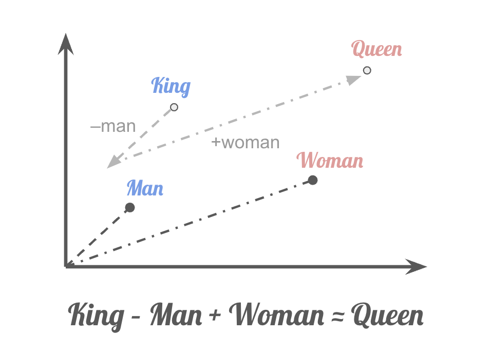

Embedder#
Tip
If you are already familiar with the concepts, take a look at the BGE models!
Embedder, or embedding model, bi-encoder, is a model designed to convert data, usually text, codes, or images, into sparse or dense numerical vectors (embeddings) in a high dimensional vector space. These embeddings capture the semantic meaning or key features of the input, which enable efficient comparison and analysis.
A very famous demonstration is the example from word2vec. It shows how word embeddings capture semantic relationships through vector arithmetic:
{kind=link}
Nowadays, embedders are capable of mapping sentences and even passages into vector space. They are widely used in real world tasks such as retrieval, clustering, etc. In the era of LLMs, embedding models play a pivot role in RAG, enables LLMs to access and integrate relevant context from vast external datasets.
Sparse Vector#
Sparse vectors usually have structure of high dimensionality with only a few non-zero values, which usually effective for tasks like keyword matching. Typically, though not always, the number of dimensions in sparse vectors corresponds to the different tokens present in the language. Each dimension is assigned a value representing the token’s relative importance within the document. Some well known algorithms for sparse vector embedding includes bag-of-words, TF-IDF, BM25, etc. Sparse vector embeddings have great ability to extract the information of key terms and their corresponding importance within documents.
Dense Vector#
Dense vectors typically use neural networks to map words, sentences, and passages into a fixed dimension latent vector space. Then we can compare the similarity between two objects using certain metrics like Euclidean distance or Cos similarity. Those vectors can represent deeper meaning of the sentences. Thus we can distinguish sentences using similar words but actually have different meaning. And also understand different ways in speaking and writing that express the same thing. Dense vector embeddings, instead of keywords counting and matching, directly capture the semantics.